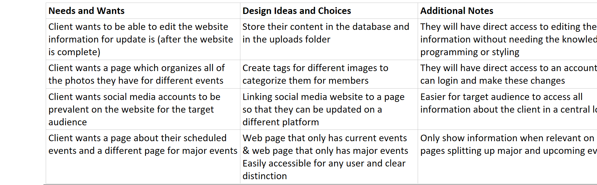
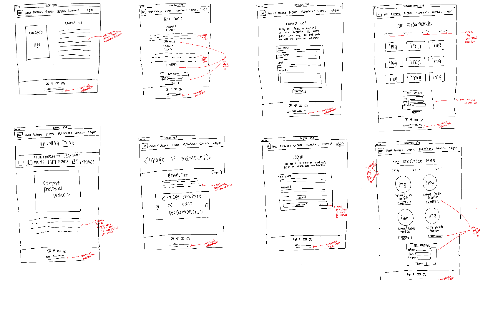

Type: Client work done for BreakFree to create a website for their dances
Role: UX/UI, Visual, Front-End
Timeline: March 2018- May 2018
Overview: BreakFree is a dance troupe on Cornell University's campus. Founded by Laura Romeo (Class of '09) in the fall of 2006, BreakFree began as a club that offered free dance classes to the Cornell Community. Her passion for dance was contagious, and BreakFree soon expanded to include a performance group that specializes in hip hop choreography. BreakFree has been featured in USA Today, the UK Daily Mail, The Huffington Post, and the Cornell Daily Sun. They continue to abide by the founding principle: The opportunity to dance should be available to everyone. While they have a strong social media presence on Instagram, Facebook, and YouTube, they lack a website. I wanted to create a website that would serve as an informational place for BreakFree to showcase their team, team members, showcases, dance style, dance workshop and their dance videos. The website would help consolidate all their social media platforms and provide one place for users to obtain information about this organization on campus.
Key Goals
1. The primary goal that BreakFree has for their website is to showcase their members, dance style, dance workshops and showcases. They hope to convince people who are interested in hip hop to join the dance group. The group would like to appeal to students who are looking to join a tight knit community on campus.
2. Visitors to the website should have a clear idea about the types of dance that the Cornell Break free draws influences from by looking through the website.
3. Cornell BreakFree would like for their website to clearly represent who they are and in what ways they differ from other dance groups on campus.
4. BreakFree hopes the new website will increase the attendance of their annual show in Bailey Hall.
5. BreakFree wants to highlight their Hip Hop Workshop which are regular, free dance classes to everyone on campus without charge or weekly commitment. They want to spread and share our own love for dance to the entire Cornell community and give people the opportunity to dance if they desire!
Thus, creating a website will help BreakFree promote their events and show information about workshop times and details.
Ideation
Before designing, it was important to take into consideration the needs and wants of the client.
From there, we started some hand-drawn drafts of the website.
{kind=link}
Cognitive Walkthrough
During the cognitive walkthrough we realized that we tended not to give enough feedback to the user that they were taking the right steps when using our site. To reduce bias we wanted to reduce tinkering so we will make sure each step is clear, and the user will get feedback that they completed each step properly. We will include feedback when submitting forms, logging into their accounts, looking at different images in the gallery, and finding out different information about BreakFree as an organization. We want to ensure that anyone who chooses to use our website will understand how to navigate and use our website.
In addition, we will ensure that the user can find the information they need in an easy more transparent way. This means that some information will need to be found in different locations. For example, during the task to check the Performances page for how to get or buy tickets, we found out that we wanted to include this information on other pages such as the 'Contact Us’ page. In addition, we are planning to aid the user through visual colors to give users more visual cues when navigating our website. For example, hovering over the navigation bar with subpages will be made a different color to indicate to the user that this is slightly different from a normal clickable navigation bar item.
Solution Space
Stay Tuned...
Full details on this project are on the way!